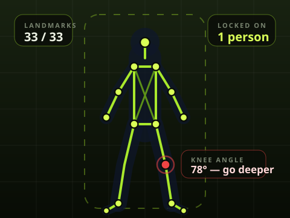

Live session
Camera view with a real skeleton drawn on top
Start a session and FixPose shows the back-camera preview with the ML Kit pose overlaid on it — every point the model detected, redrawn on each frame, plus live joint angles for the joints that matter to the exercise.
- Person lock: the app picks one subject and asks others to step out of frame, so a passing friend does not steal your rep count.
- Framing guide: a shaded region plus “step back / step closer / move left / move right” cues get your whole body in view.
- Confidence colours: joints are drawn by how sure the model is; weak frames are dropped instead of guessed at.
- Backgrounded sessions pause and keep their state — come back and you resume where you stopped.

Stylized illustration of the session overlay.